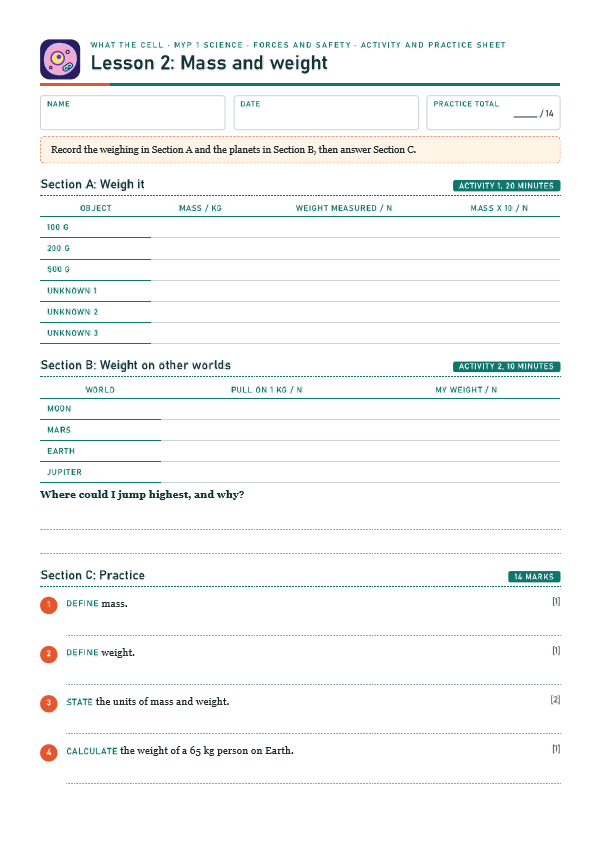

By the end of the lesson you can
- Describe gravity as a non-contact force between masses
- Distinguish between mass and weight
- Calculate weight using W = m × 10
- Compare weight on different planets
Keys: arrows or a presentation clicker move the slides, F for full screen. Slides with a red dot have a video or simulation.
Videos (all 5 minutes or less)
- 3:15
The Difference Between Mass and Weight
Veritasium. While you watch: Where is the video filmed? Slide 10.
Simulations
- Lab
Print and practise

Activity and practice sheet
Used in the lesson’s activities, with practice questions. Your teacher has the answers.
Download (PDF)Lesson 2 slides
All 16 slides in one file, to read again or print. The video buttons on the slides open YouTube.
Download the slides (PDF)Revising? The Revision tab on the unit page has the unit notes and review.
Class activity pack
Everything to print for the lesson’s activities: picture cards, sorting mats, station cards with their kit lists, and the teacher’s set-up notes. Print it before class.
Download the activity pack (PDF)Notes: Mass and weight
gravity
The force of attraction between any two masses. For example: keeps the Moon in orbit.
mass
How much matter is in an object, in kilograms. For example: the same everywhere.
weight
The force of gravity on an object, in newtons. For example: less on the Moon.
kilogram (kg)
The unit of mass. For example: 1 kg of rice.
gravitational field
The region where gravity acts. For example: around the Earth.
orbit
The curved path of one object around another. For example: the Moon around the Earth.
Key words
| gravity | pull between masses |
|---|---|
| mass | amount of matter, kg |
| weight | force of gravity, N |
| W = m × 10 | weight in N from mass in kg |
| gravitational field | where gravity acts |